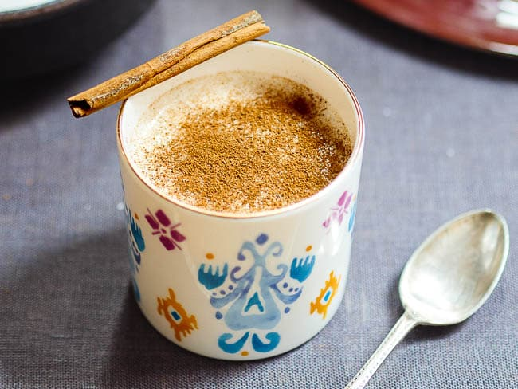

Salep is a comforting drink made with milk, sugar and ground orchid tubers known as salep powder. It is always served with cinnamon powder on the top. This creamy and rich drink is called salep or sahlep in Turkey and known as sahlab in the Eastern Mediterranean. It is also popular in Greece, Syria, Israel, Lebanon and Bulgaria.
Meal prep time : 1 minutes
Servings : 2